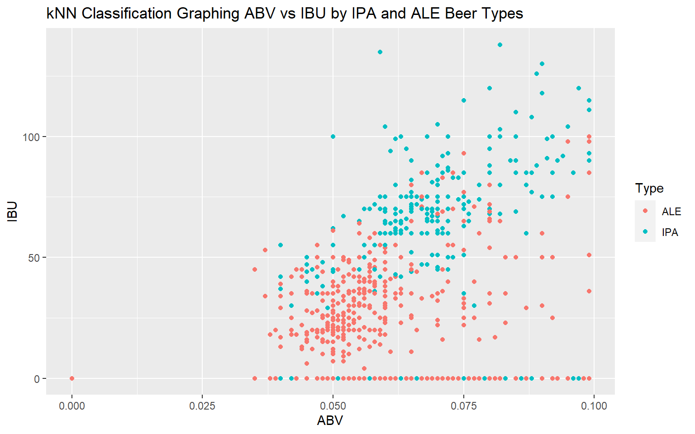
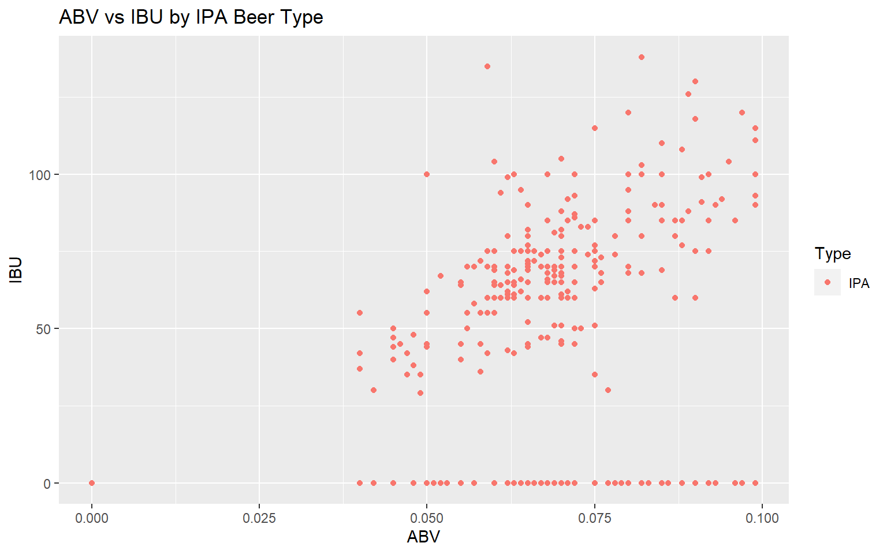

Beers Team Project
Celia
10/25/2021
Establish Libraries
library(ggplot2)
library(plotly)
library(lattice)
library(tidyverse)
library(class)
library(caret)
library(e1071)
library(xlsx)
library(stats)Code from week2 since EDA will be presented
Libraries for visualization techniques are needed
library(MASS)
library(dplyr)
library(readr)
library(GGally)
library(plotly)
library(ggthemes)
library(geofacet) #for geographic-based facets
library(naniar) #help with missing values
library(leaflet) #for map visualizationPrepare data
### read in dataset
### added Type column to create beer types as factors later on
beer <- read.xlsx(file="Beers_NEW.xlsx", sheetIndex = 1, header=TRUE, stringsAsFactors = FALSE)
### Added state Latitude, Longitude, and Region columns in Excel
brewery <- read.xlsx(file="Breweries.xlsx", sheetIndex = 1, header=TRUE, stringsAsFactors = FALSE)
## View(beer)
head(beer, 10)## Name Beer_ID ABV IBU Brewery_id Style
## 1 Loki Red Ale 2191 0.075 53 202 American Amber / Red Ale
## 2 Devil's Cup 2265 0.066 NA 178 American Pale Ale (APA)
## 3 Black Exodus 2261 0.077 NA 178 Oatmeal Stout
## 4 Lake Street Express 2260 0.045 NA 178 American Pale Ale (APA)
## 5 Foreman 2259 0.065 NA 178 American Porter
## 6 Jade 2258 0.055 NA 178 American Pale Ale (APA)
## 7 Sophomoric Saison 2099 0.072 NA 178 Saison / Farmhouse Ale
## 8 Regional Ring Of Fire 2098 0.073 NA 178 Saison / Farmhouse Ale
## 9 Garce Selé 2097 0.069 NA 178 Saison / Farmhouse Ale
## 10 Bitter Bitch 1979 0.061 60 178 American Pale Ale (APA)
## Ounces Type
## 1 16 ALE
## 2 12 ALE
## 3 12 ALE
## 4 12 ALE
## 5 12 ALE
## 6 12 ALE
## 7 12 ALE
## 8 12 ALE
## 9 12 ALE
## 10 12 ALE## identify column names
names(beer)## [1] "Name" "Beer_ID" "ABV" "IBU" "Brewery_id"
## [6] "Style" "Ounces" "Type"names(brewery)## [1] "Brew_ID" "Name" "City" "State" "Latitude" "Longitude"
## [7] "Region"VISUALIZATIONS
Begin prepare an interactive geo map of breweries by state
## Set the map useing leaflet library:
leaflet()%>%addTiles()## Add popup for brewery information
brewery_map <- brewery%>%mutate(popup_info=paste(Name,"<br/>",City,"<br>",State,"<br>"))
## Check popup_info column of data added to dataset
head(brewery_map)## Brew_ID Name City State Latitude Longitude
## 1 103 King Street Brewing Company Anchorage AK 61.3025 -158.775
## 2 224 Midnight Sun Brewing Company Anchorage AK 61.3025 -158.775
## 3 271 Alaskan Brewing Company Juneau AK 61.3025 -158.775
## 4 454 Denali Brewing Company Talkeetna AK 61.3025 -158.775
## 5 459 Kenai River Brewing Company Soldotna AK 61.3025 -158.775
## 6 494 Broken Tooth Brewing Company Anchorage AK 61.3025 -158.775
## Region popup_info
## 1 Southeast King Street Brewing Company <br/> Anchorage <br> AK <br>
## 2 Southeast Midnight Sun Brewing Company <br/> Anchorage <br> AK <br>
## 3 Southeast Alaskan Brewing Company <br/> Juneau <br> AK <br>
## 4 Southeast Denali Brewing Company <br/> Talkeetna <br> AK <br>
## 5 Southeast Kenai River Brewing Company <br/> Soldotna <br> AK <br>
## 6 Southeast Broken Tooth Brewing Company <br/> Anchorage <br> AK <br>## Tweak the map with info layout, set circles smaller to enhance visual
leaflet()%>%addTiles()%>%addCircleMarkers(data=brewery_map, lat=~Latitude, lng=~Longitude, radius=~1, popup=~popup_info)# End prepare an interactive geo map of breweries by state#
# Corresponding distribution plot of breweries by state
ggplot(brewery_map, aes(x=as.factor(State), color="blue")) +
geom_bar(color="blue") +
ggtitle("Distribution of Breweries by State") +
xlab("State") +
geom_text(stat='count', aes(label=after_stat(count)), vjust=-.25) +
theme(legend.position="none",
axis.text.x = element_text(angle = 90))+
theme(plot.title = element_text(hjust = 0.5))# Corresponding distribution plot of breweries by region
ggplot(brewery_map, aes(x=as.factor(Region), color="green")) +
geom_bar(color="green") +
ggtitle("Distribution of Breweries by Region") +
xlab("Region") +
geom_text(stat='count', aes(label=after_stat(count)), vjust=-.25) +
theme(legend.position="none",
axis.text.x = element_text(angle = 90)) +
theme(plot.title = element_text(hjust = 0.5))# Begin-Exploratory Data Analysis #
## Examine the datasets
head(beer, 5)## Name Beer_ID ABV IBU Brewery_id Style
## 1 Loki Red Ale 2191 0.075 53 202 American Amber / Red Ale
## 2 Devil's Cup 2265 0.066 NA 178 American Pale Ale (APA)
## 3 Black Exodus 2261 0.077 NA 178 Oatmeal Stout
## 4 Lake Street Express 2260 0.045 NA 178 American Pale Ale (APA)
## 5 Foreman 2259 0.065 NA 178 American Porter
## Ounces Type
## 1 16 ALE
## 2 12 ALE
## 3 12 ALE
## 4 12 ALE
## 5 12 ALEhead(brewery, 5)## Brew_ID Name City State Latitude Longitude
## 1 103 King Street Brewing Company Anchorage AK 61.3025 -158.775
## 2 224 Midnight Sun Brewing Company Anchorage AK 61.3025 -158.775
## 3 271 Alaskan Brewing Company Juneau AK 61.3025 -158.775
## 4 454 Denali Brewing Company Talkeetna AK 61.3025 -158.775
## 5 459 Kenai River Brewing Company Soldotna AK 61.3025 -158.775
## Region
## 1 Southeast
## 2 Southeast
## 3 Southeast
## 4 Southeast
## 5 Southeast## Merge the datasets
merge_bb <- merge(beer, brewery, by.x="Brewery_id", by.y="Brew_ID")
head(merge_bb, 5)## Brewery_id Name.x Beer_ID ABV IBU Style Ounces Type
## 1 1 Get Together 2692 0.045 50 American IPA 16 IPA
## 2 1 Wall's End 2690 0.048 19 English Brown Ale 16 ALE
## 3 1 Stronghold 2688 0.060 25 American Porter 16 ALE
## 4 1 Maggie's Leap 2691 0.049 26 Milk / Sweet Stout 16 ALE
## 5 1 Pumpion 2689 0.060 38 Pumpkin Ale 16 ALE
## Name.y City State Latitude Longitude Region
## 1 NorthGate Brewing Minneapolis MN 46.44186 -93.36551 Midwest
## 2 NorthGate Brewing Minneapolis MN 46.44186 -93.36551 Midwest
## 3 NorthGate Brewing Minneapolis MN 46.44186 -93.36551 Midwest
## 4 NorthGate Brewing Minneapolis MN 46.44186 -93.36551 Midwest
## 5 NorthGate Brewing Minneapolis MN 46.44186 -93.36551 Midwest## Drop latitude and longitude columns as no longer needed
drop <- c("Latitude","Longitude")
df = merge_bb[,!(names(merge_bb) %in% drop)]
names(df)## [1] "Brewery_id" "Name.x" "Beer_ID" "ABV" "IBU"
## [6] "Style" "Ounces" "Type" "Name.y" "City"
## [11] "State" "Region"## Rename columns to avoid confusion
df <- df %>%
rename(
Beer = Name.x,
Brewery = Name.y
)
str(df)## 'data.frame': 1683 obs. of 12 variables:
## $ Brewery_id: num 1 1 1 1 1 2 2 2 2 2 ...
## $ Beer : chr "Get Together" "Wall's End" "Stronghold" "Maggie's Leap" ...
## $ Beer_ID : num 2692 2690 2688 2691 2689 ...
## $ ABV : num 0.045 0.048 0.06 0.049 0.06 0.042 0.08 0.077 0.065 0.066 ...
## $ IBU : num 50 19 25 26 38 42 68 25 NA 21 ...
## $ Style : chr "American IPA" "English Brown Ale" "American Porter" "Milk / Sweet Stout" ...
## $ Ounces : num 16 16 16 16 16 16 16 16 16 16 ...
## $ Type : chr "IPA" "ALE" "ALE" "ALE" ...
## $ Brewery : chr "NorthGate Brewing " "NorthGate Brewing " "NorthGate Brewing " "NorthGate Brewing " ...
## $ City : chr "Minneapolis" "Minneapolis" "Minneapolis" "Minneapolis" ...
## $ State : chr " MN" " MN" " MN" " MN" ...
## $ Region : chr "Midwest" "Midwest" "Midwest" "Midwest" ...#Get count of breweries in each state
brewery_count <- aggregate(Brewery_id ~ State, df, sum) #gives column name for count as Brewery_ID
#Rename the Brewery_id column to Total_Breweries
brewery_count <- brewery_count %>%
rename(
Total_Breweries = Brewery_id
)Check for missing values
library(naniar)
vis_miss(df)#ABV, IBU and Style contain missing values - count
table(is.na(df$ABV))##
## FALSE TRUE
## 1635 48table(is.na(df$IBU))##
## FALSE TRUE
## 1024 659table(is.na(df$Type))##
## FALSE
## 1683table(is.na(df$Style))##
## FALSE
## 1683#view which beers do not have styles or types
df[is.na(df$Style),]## [1] Brewery_id Beer Beer_ID ABV IBU Style
## [7] Ounces Type Brewery City State Region
## <0 rows> (or 0-length row.names)df[is.na(df$Type),]## [1] Brewery_id Beer Beer_ID ABV IBU Style
## [7] Ounces Type Brewery City State Region
## <0 rows> (or 0-length row.names)#impute the rows with zeroes per Ryan
df$ABV[is.na(df$ABV)] <- 0
df$IBU[is.na(df$IBU)] <- 0
## How does this data relate to client Budweiser?
which(df$Brewery == "Budweiser") ## integer(0)grep("Clydesdales^",df$Brewery)## integer(0)drop <- c("Region.y")
mergeABVIBU = merge_bb[,!(names(merge_bb) %in% drop)]
drop <- c("Region.y", "Style.y")
mergeABVIBU.Style = merge_bb[,!(names(merge_bb) %in% drop)]Visualize ABV v IBU medians by state and by region
options(scipen = 999)
mergeABVIBU <- as.data.frame(mergeABVIBU)
mergeABVIBU.Style <- as.data.frame(mergeABVIBU.Style)
#by state
ggplot(mergeABVIBU, aes(ABV, IBU)) +
geom_point() +
ggtitle("Median ABV v IBU by State") +
facet_wrap(vars(State)) #by region
ggplot(mergeABVIBU, aes(ABV, IBU, color=Region)) +
geom_point() +
ggtitle("Median ABV v IBU by Region") +
facet_wrap(vars(Region)) #recheck for missing values
vis_miss(df)# Summary Statistics
#load the mosaic package/library
library(mosaic)
#load the psych package/library
library(psych)
#5-number summary
favstats(df$ABV)## min Q1 median Q3 max mean sd n missing
## 0 0.051 0.059 0.069 0.12 0.05992989 0.01664688 1683 0favstats(df$IBU)## min Q1 median Q3 max mean sd n missing
## 0 0 22 55 138 29.93286 31.43674 1683 0par(mfrow=c(2,2)) #resets graphics device
#histograms for ABV and IBU
hist(df$ABV, labels = TRUE)
hist(df$IBU, labels = TRUE)# Describe by Style or by Type
#describeBy(df, group=df$Style)
#describeBy(df,group=df$Type)
State_ABV <- aggregate(x = df$ABV,
by = list(df$State),
FUN = median)
State_IBU <- aggregate(x = df$IBU,
by = list(df$State),
FUN = median)
Style_ABV <- aggregate(x = df$ABV,
by = list(df$Style),
FUN = median)
Style_IBU <- aggregate(x = df$IBU,
by = list(df$Style),
FUN = median)
Type_ABV <- aggregate(x = df$ABV,
by = list(df$Type),
FUN = median)
Type_IBU <- aggregate(x = df$IBU,
by = list(df$Type),
FUN = median)
#correlation analysis
library(Hmisc)
cor(df$ABV, df$IBU)## [1] 0.392111#visualize correlations
library(GGally)
#Correlation plot of data
ggpairs(df, columns = 4:5, ggplot2::aes(colour=Type)) ## Visualize summaries
#plot of ABV by Style
qplot(mergeABVIBU.Style$Style, mergeABVIBU.Style$ABV, color=mergeABVIBU.Style$Region) +
ggtitle("Median ABV by Style") +
xlab("Style") +
ylab('ABV') + labs(color='Region') +
theme(legend.position="top",
axis.text.x = element_text(angle = 90, size=6)) +
theme(legend.text=element_text(size=6)) +
theme(plot.title = element_text(hjust = 0.5, size=12))#plot of IBU by Style
qplot(mergeABVIBU.Style$Style, mergeABVIBU.Style$IBU, color=mergeABVIBU.Style$Region) +
ggtitle("Median IBU by Style") +
xlab("Style") +
ylab('IBU') + labs(color='Region') +
theme(legend.position="top",
axis.text.x = element_text(angle = 90, size=6)) +
theme(legend.text=element_text(size=6)) +
theme(plot.title = element_text(hjust = 0.5, size=12))dfALEIPA = df %>% filter(Type == "IPA" | Type == "ALE")
splitPerc = .70
trainIndices = sample(1:dim(dfALEIPA)[1],round(splitPerc * dim(dfALEIPA)[1]))
train = dfALEIPA[trainIndices,]
test = dfALEIPA[-trainIndices,]
## Get a visual of the relationship and see for nearest neighbor
par(mfrow=c(2,2)) #reset graphics device
train %>% ggplot(aes(x=ABV, y=IBU, color=Type)) + geom_point() + ggtitle("kNN Classification Graphing ABV vs IBU by IPA and ALE Beer Types")
## Separate visuals of ALE and IBU needed
### so to not misrepresent data
## Visual of train model for ALE
par(mfrow=c(2,2)) #reset graphics device
plot_ALE = train %>% filter(Type == "ALE")
plot_ALE %>% ggplot(aes(x=ABV, y=IBU, color=Type)) + geom_point() + ggtitle("ABV vs IBU by ALE Beer Type")
## Visual of train model for IPA
par(mfrow=c(2,2)) #reset graphics device
plot_IPA = train %>% filter(Type == "IPA")
plot_IPA %>% ggplot(aes(x=ABV, y=IBU, color=Type)) + geom_point() + ggtitle("ABV vs IBU by IPA Beer Type") # kNN analysis ## Conduct the k-NN
#What does a confusion matrix tell you:
#"It is a summary of prediction results on a
#classification problem. The number of correct and
#incorrect predictions are summarized with count values
#and broken down by each class. This is the key to the
#confusion matrix. The confusion matrix shows the ways
#in which your classification model is confused when it
#makes predictions. It gives you insight not only into
#the errors being made by your classifier but more
#importantly the types of errors that are being made.
#It is this breakdown that overcomes the limitation
#of using classification accuracy alone."-machinelearningmastery.com
# Get the probabilities
# A confusion matrix is a summary of prediction results
## on a classification problem.
## tes run at k=5
set.seed(2040) #for reproducibility
classifications = knn(train[,c(4,5)],test[,c(4,5)],train$Type, prob = TRUE, k = 5)
levels = rev(test$Type)
table(test$Type,classifications)## classifications
## ALE IPA
## ALE 308 40
## IPA 47 110confusionMatrix(table(test$Type,classifications))## Confusion Matrix and Statistics
##
## classifications
## ALE IPA
## ALE 308 40
## IPA 47 110
##
## Accuracy : 0.8277
## 95% CI : (0.7919, 0.8596)
## No Information Rate : 0.703
## P-Value [Acc > NIR] : 0.00000000007685
##
## Kappa : 0.5929
##
## Mcnemar's Test P-Value : 0.5201
##
## Sensitivity : 0.8676
## Specificity : 0.7333
## Pos Pred Value : 0.8851
## Neg Pred Value : 0.7006
## Prevalence : 0.7030
## Detection Rate : 0.6099
## Detection Prevalence : 0.6891
## Balanced Accuracy : 0.8005
##
## 'Positive' Class : ALE
## #do for k=15
set.seed(2040) #for reproducibility
classifications = knn(train[,c(4,5)],test[,c(4,5)],train$Type, prob = TRUE, k = 15)
table(test$Type,classifications)## classifications
## ALE IPA
## ALE 313 35
## IPA 63 94confusionMatrix(table(test$Type,classifications))## Confusion Matrix and Statistics
##
## classifications
## ALE IPA
## ALE 313 35
## IPA 63 94
##
## Accuracy : 0.8059
## 95% CI : (0.7687, 0.8395)
## No Information Rate : 0.7446
## P-Value [Acc > NIR] : 0.0006986
##
## Kappa : 0.5238
##
## Mcnemar's Test P-Value : 0.0063833
##
## Sensitivity : 0.8324
## Specificity : 0.7287
## Pos Pred Value : 0.8994
## Neg Pred Value : 0.5987
## Prevalence : 0.7446
## Detection Rate : 0.6198
## Detection Prevalence : 0.6891
## Balanced Accuracy : 0.7806
##
## 'Positive' Class : ALE
## head(dfALEIPA)## Brewery_id Beer Beer_ID ABV IBU Style Ounces
## 1 1 Get Together 2692 0.045 50 American IPA 16
## 2 1 Wall's End 2690 0.048 19 English Brown Ale 16
## 3 1 Stronghold 2688 0.060 25 American Porter 16
## 4 1 Maggie's Leap 2691 0.049 26 Milk / Sweet Stout 16
## 5 1 Pumpion 2689 0.060 38 Pumpkin Ale 16
## 6 2 A Beer 2683 0.042 42 American Pale Ale (APA) 16
## Type Brewery City State Region
## 1 IPA NorthGate Brewing Minneapolis MN Midwest
## 2 ALE NorthGate Brewing Minneapolis MN Midwest
## 3 ALE NorthGate Brewing Minneapolis MN Midwest
## 4 ALE NorthGate Brewing Minneapolis MN Midwest
## 5 ALE NorthGate Brewing Minneapolis MN Midwest
## 6 ALE Against the Grain Brewery Louisville KY Southeast#check Type as factor
levels(dfALEIPA$Type)## NULLDo reverse levels for confusion matrix table:
dfALEIPA$Type <- fct_rev(dfALEIPA$Type)
levels(dfALEIPA$Type)## [1] "IPA" "ALE"kNN analysis - continued
re-run k=15 with Type reversed
set.seed(2040) #for reproducibility
classifications = knn(train[,c(4,5)],test[,c(4,5)],train$Type, prob = TRUE, k = 15)
table(test$Type,classifications)## classifications
## ALE IPA
## ALE 313 35
## IPA 63 94confusionMatrix(table(test$Type,classifications))## Confusion Matrix and Statistics
##
## classifications
## ALE IPA
## ALE 313 35
## IPA 63 94
##
## Accuracy : 0.8059
## 95% CI : (0.7687, 0.8395)
## No Information Rate : 0.7446
## P-Value [Acc > NIR] : 0.0006986
##
## Kappa : 0.5238
##
## Mcnemar's Test P-Value : 0.0063833
##
## Sensitivity : 0.8324
## Specificity : 0.7287
## Pos Pred Value : 0.8994
## Neg Pred Value : 0.5987
## Prevalence : 0.7446
## Detection Rate : 0.6198
## Detection Prevalence : 0.6891
## Balanced Accuracy : 0.7806
##
## 'Positive' Class : ALE
## Obtain optimal k value for the kNN model
type_accuracy <- data.frame(accuract=numeric(75), k=numeric(75))
for (iter in 1:75) {
type_class <- knn(train[,c(4,5)], test[c(4,5)],
train$Type,
prob=TRUE, k=iter)
table(test$Type, type_class)
cm <- confusionMatrix(table(test$Type, type_class))
type_accuracy$accuracy[iter] <- cm$overall[1]
type_accuracy$k[iter] <- iter
}
#plot of optimal k
par(mfrow=c(2,2)) #reset graphics device
figure <- plot_ly(type_accuracy, x=type_accuracy$k, y=type_accuracy$accuracy,
type="scatter", mode="lines")
figure <- figure %>% layout(title='Optimal k for Model',
xaxis = list(title = 'K value',
zeroline=TRUE),
yaxis = list(title = 'Accuracy'))
figure#Naive Bayes - continued
dfALEIPA = df %>% filter(Type == "IPA" | Type == "ALE")
splitPerc = .70
for(j in 1:iterations)
{
trainIndices = sample(1:dim(dfALEIPA)[1],round(splitPerc * dim(dfALEIPA)[1]))
train = dfALEIPA[trainIndices,]
test = dfALEIPA[-trainIndices,]
model = naiveBayes(train[,c(4,5)],as.factor(train$Type),laplace=1)
table(predict(model,test[,c(4,5)]),as.factor(test$Type))
CM=confusionMatrix(table(predict(model,test[,c(4,5)]),as.factor(test$Type)))
masterAcc[j]=CM$overall[1]
}
MeanAcc=colMeans(masterAcc)
MeanAcc## [1] 0.795703## Error in naive_bayes.default(data, y, prior, laplace, usekernel, usepoisson, : naive_bayes(): Vector with prior probabilities should have 2 entries## Error in plot(nb, which = c("ABV", "IBU"), ask = TRUE, arg.num = list(col = 1:3, : object 'nb' not foundHow about a third test – one that tests medians between ABV v IBU for IPAs and ABV v IBU for Ales?
Try the wilcox ranked sum test for difference in medians
#Type -> ABV | IBU| Diff ABV-IBU | Absolute Diff ABV-IBU | Rank
#test run of wilcox.test()
resABVIBU <- wilcox.test(dfALEIPA$ABV, dfALEIPA$IBU, exact=FALSE, mu=0, conf.int=T,
conf.level=0.95, correct=F)
resABVIBU##
## Wilcoxon rank sum test
##
## data: dfALEIPA$ABV and dfALEIPA$IBU
## W = 1092622, p-value < 0.00000000000000022
## alternative hypothesis: true location shift is not equal to 0
## 95 percent confidence interval:
## -23.94701 -19.95002
## sample estimates:
## difference in location
## -21.94001#for ABV
res <- wilcox.test(ABV ~ Type, data=dfALEIPA, exact=FALSE, mu=0, conf.int=T,
conf.level=0.95, correct=F)
res##
## Wilcoxon rank sum test
##
## data: ABV by Type
## W = 155661, p-value < 0.00000000000000022
## alternative hypothesis: true location shift is not equal to 0
## 95 percent confidence interval:
## -0.01299753 -0.01093057
## sample estimates:
## difference in location
## -0.01194392#get p-value
res$p.value## [1] 0.0000000000000000000000000000000000000000000000000000000000000002235033#Reject the null - p-value (2.235033e-64)is significant (less than alpha of .05)
#to suggest that we reject the null that median ABV for IPA and Ale
#is equal (actually, it is not equal)#for IBU
res2 <- wilcox.test(IBU ~ Type, data=dfALEIPA, exact=FALSE, mu=0, conf.int=T,
conf.level=0.95, correct=F)
res2##
## Wilcoxon rank sum test
##
## data: IBU by Type
## W = 174239, p-value < 0.00000000000000022
## alternative hypothesis: true location shift is not equal to 0
## 95 percent confidence interval:
## -39.99993 -31.99996
## sample estimates:
## difference in location
## -35#get p-value
res2$p.value## [1] 0.00000000000000000000000000000000000000000000000000001126087#Reject the null - p-value (1.127045e-53) is significant (less than alpha of .05)
#to suggest that we reject the null that median IBU for IPA and Ale
#is equal (actually, it is not equal)#correlation analysis
library(Hmisc)
cor(dfALEIPA$ABV, dfALEIPA$IBU)## [1] 0.3906903Visualize correlations
library(GGally)
#Correlation plot of data
par(mfrow=c(2,2)) #reset graphics device
ggpairs(dfALEIPA, columns = 4:5, ggplot2::aes(colour=Type)) + ggtitle("Correlation Plot of ABV vs IBU by Beer Type") # Conclusion of Wilcoxon Rank Sum Test and overall problem analysis:
#p-value is significant in rejecting the null hypothesis that ABV v IBU by
#the two beer types is equal.